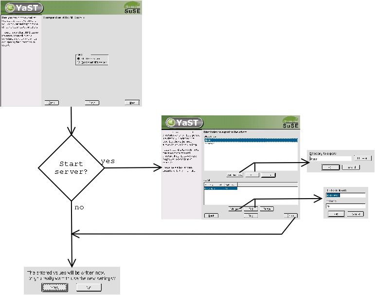
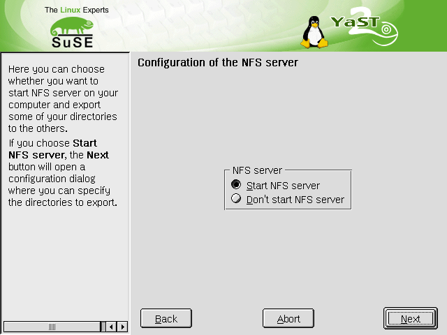
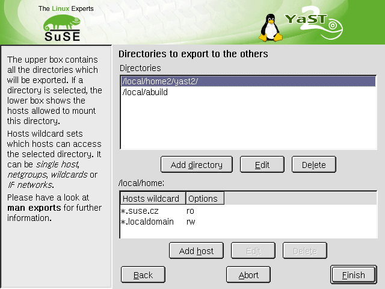

The NFS server config module manages the /etc/exports file and starts and stops the necessary init scripts: nfsserver and portmap.
Directories to export can be selected in a browse dialog.
The 'New' buttons changed names to 'Add directory' and 'Add host'.
Keyboard shortcuts have been made unique.
An 'Abort' button has been added.


